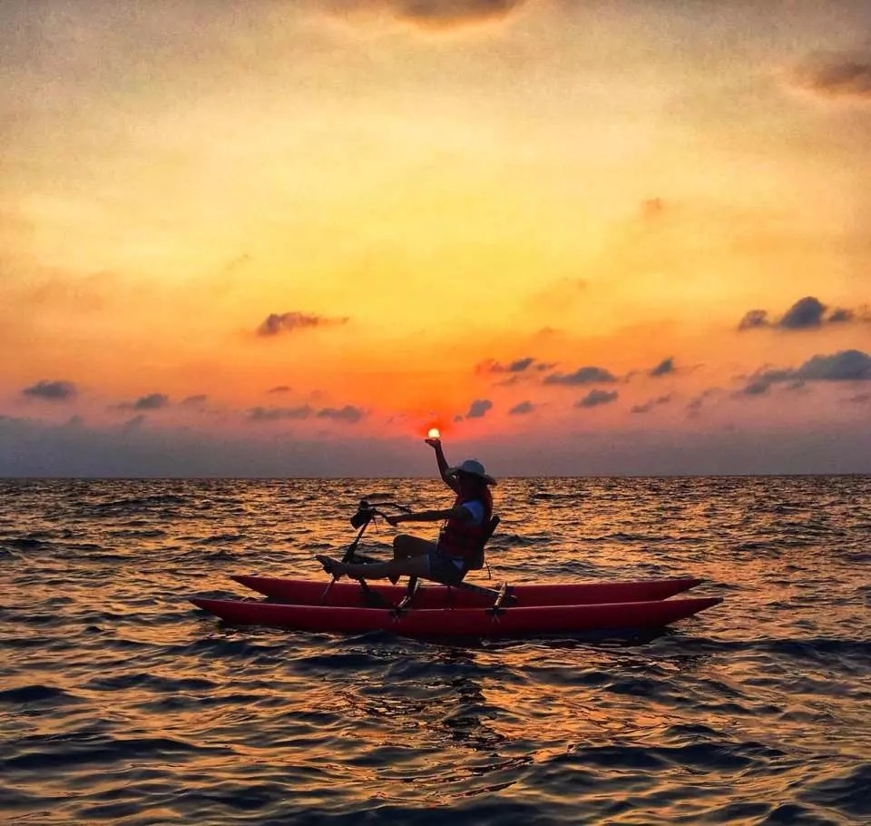

Day 1 (9/28) 上午 9:00~12:00：竹北出發 → 前往日月潭伊達邵 (約2.5小時) 中午 ~12:30：伊達邵老街 品嚐邵族風味午餐 下午： 選項一：環湖自行車（伊達邵→水社→向山） 選項二：搭船遊湖（玄光寺、拉魯島） 選項三： 水上自行車  傍晚：入住 湖景飯店，欣賞夕陽 晚上：伊達邵商圈 晚餐、自由活動
Day 2 (9/29) 上午：飯店早餐 → 前往 九族文化村 ⏰園區開放時間 9:30~17:30 上午：搭乘 日月潭纜車 俯瞰湖景 ⏰纜車開放時間 10:00~16:30 中午：園區內享用午餐 下午：參觀 原住民部落展演、遊樂設施體驗 傍晚：返回溫暖的家